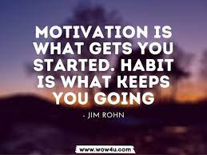

Home
Articles
Habits
Skills
Quotes
Habits

Develop Concentration
why? Because we live in a word of distraction and concentration is one of the valuable skills to develop to succeed in life.
Set achievable goals
why? Because you can't set yourself some goals that you will never reach. That will only make you more blind and unable to start. You can set yourself some short-term and easy-to-achieve goals so that you will be more motivated to work hard.
Quit mobile phones and boring socializing
why? Because mobile phones have basically dominated the lives of most people, and boring social interactions are becoming more and more pervasive in our lives. If we want to study hard, we must quit mobile phones and boring social interactions and spend this time studying.
Persevere in accomplishing your goals
why? Because no matter what you do, it’s all about persistence, no matter how big or small it is. As long as you persist, you will definitely gain a different self. Learning is the same. No matter what you learn, you must persist.